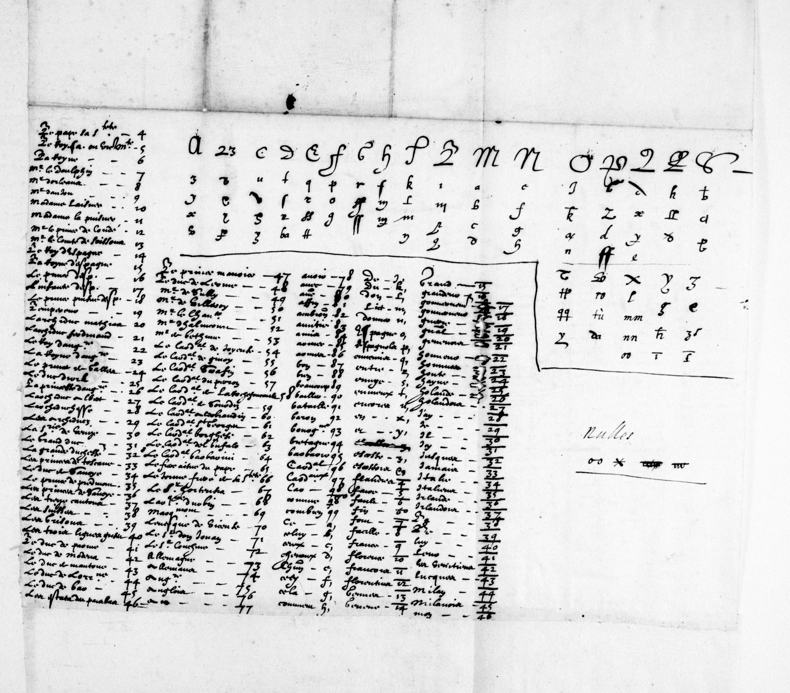

First dossier · Diplomatic correspondence
Marie de’ Medici: what two letters to Rome conceal
In autumn 1610, enciphered passages interrupt the French of two letters to Savary de Brèves. A key recovered at the BnF makes possible, to our knowledge, a first decipherment. It reveals political judgements; some characters remain probable but unconfirmed.
Summary: how far has the decipherment progressed?
Both passages now have a continuous reading, supported by the reviews and Satoshi Tomokiyo’s feedback. He confirms that our Français 3462 image is the Henri IV–Brèves key image he knew; “3642” was a mistyped shelfmark. He corroborates 72~→QUE, 79~→RE, 86~→SE and 90~→TION.[7]
We consider the overall meaning highly plausible. To our knowledge, this is a first decipherment of these passages; some characters remain probable but unconfirmed. Reservations concern the B in “ambition” and “foiblesse”, the ending of “acompagnez” and several signs in “recognoissant” and “sentant”. The numerical readings have stronger support. Applied to Marie’s letters, the Henri IV table accounts for most of the text: in our view the regent used a very close key, whose few variants would explain the signs that remain uncertain.
The 2021 work concerned Henri IV’s letter of 5 January 1610. Satoshi does not describe Marie’s passages as already solved or validate their entire reading. Remaining questions.
1610: a regency and fragile alliances
Henri IV was assassinated on 14 May 1610. Louis XIII succeeded him as a child, with Marie de’ Medici acting as regent. These letters were written only months after an abrupt change of government. This chronology is established independently of the proposed decipherment.[4]
In spring 1610, the Bruzolo agreements brought Henri IV and Charles Emmanuel I together against Spain. The king’s death undermined that project; closer relations between the regency and Madrid left Savoy exposed. This context comes from historical scholarship, not the proposed decipherment.[5]
Rome was another place of negotiation. Brèves represented the French monarchy there: the regent’s correspondence conveyed both policy and an assessment of what could be obtained. In November, the clear text already mentions disarmament and the risk of refusal. The ciphered passage would qualify the judgement of the participants. The general issue was visible; the diplomatic reservation remained concealed.
| Date | Established event |
|---|---|
| Spring 1610 | Franco-Savoyard rapprochement at Bruzolo before Henri IV’s death [5]. |
| 14 May 1610 | Henri IV assassinated; Louis XIII succeeds him, Marie de’ Medici acts as regent [4]. |
| 15 September 1610 | The first letter studied, in Français 3789 [1]. |
| 10 November 1610 | The second letter studied, in the same manuscript [2]. |
The manuscript catalogue identifies Marie’s two letters as items 11 and 12, alongside correspondence from Henri IV, Louis XIII, Brulart and the duke of Savoy. This documentary setting helps locate the correspondents, but does not prove that every item uses one key.[6]
Two letters and a diplomatic issue
The two pieces belong to manuscript Français 3789 at the Bibliothèque nationale de France. Marie de’ Medici, then regent, addresses François Savary de Brèves, ambassador in Rome. The letters are dated 15 September and 10 November 1610; the passages studied are on folios 17r and 19r.[1][2]
The cipher does not cover the whole letter. It fits inside otherwise readable French sentences. The surrounding text helps establish grammar and meaning, but an attractive continuation cannot turn an ambiguous sign into a certain letter.
The research dossier places these exchanges in the affairs of Savoy: the journey of the duke’s son to Spain in September, and discussions of disarmament in November. The reading must be judged within that documentary context, without expecting these two passages alone to explain the whole of French policy in Italy.

15 September: malice, ambition and weakness
The two proposed passages retain the resulting French spelling. Dotted underlining marks words affected by glyph decisions that need checking; blue backgrounds mark numerical values corroborated by Satoshi.
ce sera trop manifester leurs malice et am[b?]ition que
acompagne[z?] d’imprudence et [de?] foi[b?]lesse
They would join the clear text as follows: « […] si avec cela ilz y apportent encore de la difficulté, ce sera trop manifester leurs malice et am[b?]ition que j’estime, s’il en falloit venir à l’effet, devoir estre acompagne[z?] d’imprudence et [de?] foi[b?]lesse, selon la constitution présente de leurs affaires. »
Working English rendering. […] if they raise further difficulties, this will reveal their malice and ambition all too clearly, which, if put into effect, I consider would be accompanied by imprudence and weakness, given the present state of their affairs.
The English rendering and the modernised French on the French page are editorial aids, not letter-for-letter transcriptions. “Ambition” depends especially on a barred b, a small m now selected as I and the now corroborated suffix 90~ → tion. These dependencies remain visible in the alignment.
10 November: the pope and disarmament
The second letter would yield:
que le pape re[c?]ognoi[s?][s?]ant leurs arogance et [s?]entant sa timidite
With its neighbours in clear text: « Aussi vois-je bien que le pape re[c?]ognoi[s?][s?]ant leurs arogance et [s?]entant sa timidite ne sera pressé jusques à l’extrémité du désarmement, pour recevoir enfin la honte d’un refus absolu […] ».
This would be an assessment of political pressure rather than an announcement of a decision: how far should the pope be pressed, at the risk of an outright refusal? The interpretation depends on the reading. “Recognoissant” remains particularly fragile: its RE prefix is now corroborated by Satoshi, but several signs, including C/B and the proposed double S, still need comparison with the key.
Examine the 10 November letter →
What the latest review contributes
Brice’s comparisons helped distinguish homophones, retain the U3 ligature and support sequences such as “d’imprudence” and “timidite”. A favourable overall assessment does not turn earlier “possible” or “undecidable” answers into certain choices for every sign.
Satoshi’s feedback adds support for four numerical values previously inferred from context, affecting six occurrences. The prefix 79~ → re therefore no longer rests solely on our proposed word “recognoissant”; its C/B and double S still need examination. Satoshi gives 41 → leur, while Brice selected “leurs”: that ending remains an explicit difference.
Bracketed characters remain proposed. Blue marks values corroborated by Satoshi, whose application to Marie’s key remains a candidate. This retains a continuous reading and its specific reservations. Three levels of verification.
The recovered key: a BnF document
The physical point of reference is frame 112 of manuscript Français 3462, digitised on Gallica as btv1b9058227h. It is page 26 of the partial PDF supplied by Brice. The file’s page number and the viewer’s frame number must therefore remain distinct. Brice’s high-resolution image makes it possible to inspect homophones too small to distinguish confidently in the first PDF.[3]

This is not a simple substitution alphabet. One plaintext letter can have several cipher signs, or homophones. The key also represents syllables, words and nomenclator entries. A message therefore mixes several levels: a sign may yield one letter, another “ce” or “en”, and a number an expression such as “le pape”.
Proposed matches include a, → ce, x, → en, y, → et and 4 → le pape. A comma is consequently not a reliable word boundary. Shape also matters: a roughly transcribed “d” can conceal distinct glyphs. The Method shows how these distinctions are recorded.
Satoshi confirms this key image for Henri IV–Brèves. Its exact application to Marie’s letters remains to be checked. Four values now corroborated →.
The key was already known through work on Henri IV’s letter to Brèves, deciphered in 2021 by George Lasry with assistance from Norbert Biermann and Satoshi Tomokiyo. Our investigation recovered its correct shelfmark and applied it to Marie’s two letters: it accounts for most of their text, which points to a very close key with a few variants. The first decipherment claimed to our knowledge concerns Marie’s passages.[7]
How the investigation progressed
13–14 October: finding the right document and the right signs
The investigation began with two short passages flagged in earlier work. One lead was a longer letter from Henri IV to Brèves whose key might apply. An initial batch of images did not show the expected letter: catalogue descriptions, folios and received frames had to be distinguished, without treating a similar number as an identification.
The first transcriptions separated simple letters, barred shapes, doubled signs, comma codes and numbers. Brice’s reviews changed boundaries and distinguished shapes initially grouped together. Key search cannot compensate for a transcription that erases those distinctions.
15 October: the key collection and a higher-resolution view
The initial bibliographic lead named “Français 3642”. The investigation turned to Français 3462, a collection of cipher keys. Brice’s PDF allowed several neighbouring keys to be compared; page 26 supplied the sought correspondences. High-resolution frame 112 followed. Satoshi now confirms the image and the mistyped “3642” shelfmark; this identification alone does not establish exact use of the key by Marie.
The first transcription of the key still failed to yield continuous French. Homophones, bars and neighbouring shapes remained difficult. Automated experiments and probable words produced fragments, but an improved score was not proof. Choosing a different letter for each ambiguous occurrence could manufacture coherence unsupported by the manuscript.
16 October: making every decision inspectable
C10 returned to a manual alignment without a language model. It separated homophones by visual identifiers, documented the tu merge and removed fallback from overlined to simple numbers. Brice’s reviews and comparison with Satoshi’s values complement this stage: a continuous proposed reading that retains the earlier difficulties.
Review the leads and experiments →
17 October: comparing values with Satoshi’s feedback
On 17 October, Satoshi’s feedback confirmed the image and corroborated four numerical values. This consolidates the continuous reading while retaining unresolved sign choices.
What changed in the reading
The breakthrough was not a new solver generating French. C10 reconstructs a manual alignment without a language model. It separates signs previously grouped too loosely and fixes a program behaviour that discarded overlining.
For example, two old segments, t and u, are combined into one glyph, U3. The sequence D–I–M–P–R–U–D–EN–CE gives “d’imprudence”. Also, an overlined number must not silently fall back to the same simple number. Earlier outputs “Concini” and “avec” for particular occurrences could therefore no longer be treated as established readings.
The Method records the other changes, the four values now corroborated and what the checks actually establish.
What this reading contributes to history
In September, the proposed words “malice”, “ambition”, “imprudence” and “foiblesse” make explicit a harsh judgement of the Savoyard interlocutors’ demands and resources. Read with the surrounding clear text, the regency assesses both their difficulties and the risk of turning intentions into action.
In November, the reading highlights the limits of diplomatic pressure. In the disarmament negotiations, pressing the pope into a request likely to be refused would risk humiliation. The proposed cipher text complements the surrounding references to disarmament and outright refusal. The precise interpretation of attitudes still depends on unconfirmed signs in “recognoissant” and “sentant”.
The letters thus provide access to the regency’s assessments addressed to its ambassador in Rome. A continuous reading explains the five lines; sign-by-sign checking must still resolve the remaining reservations. Historical coherence supports interpretation, but does not independently prove the cipher.